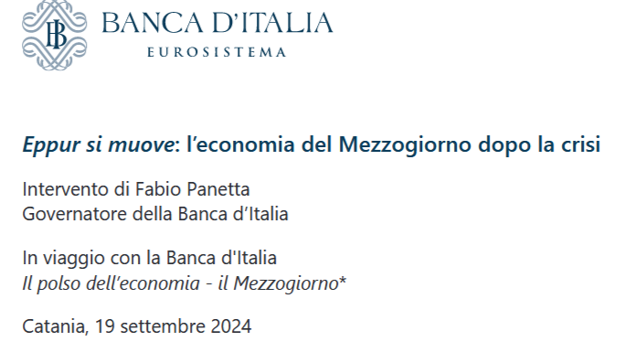

Delocalizzare … al Mezzogiorno !
Paolo Volterra ![]()
Delocalizzare … al Mezzogiorno !

Il SAL del Governatore di @Banca-d’Italia sul #Mezzogiorno
Qui il PDF del suo discorso ultimo a Catania; c’è pure il video
Appresso un abstract e un riassunto con LLM
1. il Mezzogiorno rappresenta il primo mercato di sbocco per le imprese del Centro Nord: per ogni euro investito al Sud, 40 centesimi diventano acquisti di beni e servizi nelle altre aree territoriali
2. le debolezze dell’economia meridionale sono ben note, e riguardano le componenti basilari dell’assetto produttivo e istituzionale
3. le regioni meridionali, con 1/3 della popolazione italiana, generano solo 1/5 del PIL e 1/10 del prodotto manifatturiero
4. le imprese, in media più piccole rispetto a quelle del Centro Nord, sono in ampia misura specializzate in attività a bassa intensità tecnologica e orientate al mercato interno
5. nel periodo successivo alla pandemia il Mezzogiorno ha invece conseguito risultati migliori di quelli dell’intera economia italiana
6. tra il 2019 e il 2023 il prodotto è aumentato del 3,7%, contro il 3,3 nelle altre regioni; le esportazioni sono cresciute del 13%, 4 punti in più del Centro Nord
7. l’occupazione è salita del 3,5%, a fronte dell’1,5 nel resto del Paese. Il tasso di disoccupazione è sceso di 3,6 punti, il doppio che nelle regioni centro-settentrionali
8. la crescita osservata negli anni più recenti è in parte dovuta a fattori temporanei, legati alla risposta fornita agli shock globali dalle autorità nazionali ed europee
9. il Mezzogiorno ha beneficiato dell’incremento degli investimenti pubblici e del sostegno ai redditi delle famiglie meno abbienti
10. la ripresa in atto riflette verosimilmente anche i processi di ristrutturazione e di consolidamento produttivo innescati dalla precedente recessione, che hanno determinato l’espulsione dal mercato di imprese deboli, meno efficienti e tipicamente più piccole
11. nel periodo 2007–19 la quota di occupati nelle aziende meridionali con almeno 200 addetti è cresciuta di quasi 2 punti percentuali, al 10,2%
12. anche la leva finanziaria è migliorata, registrando un calo di 10 punti percentuali sia per l’uscita dal mercato di aziende fortemente indebitate, sia per il rafforzamento patrimoniale delle altre, in particolare quelle medio-grandi
13. accanto ai settori tradizionali come quello dell’automobile, l’agroalimentare e il turismo, si sono consolidati poli specializzati nella produzione di semiconduttori e microsistemi e nei settori aerospaziale e farmaceutico
14. l’uso della robotica, delle infrastrutture di cloud computing e dell’intelligenza artificiale da parte delle imprese è aumentato al Sud a ritmi analoghi a quelli del resto d’Italia
1516. la filiera agroalimentare è diffusa soprattutto in Campania, Molise, Puglia, Sardegna e Sicilia; quella relativa al settore dell’automobile in Abruzzo, Basilicata, Campania e Molise
17. tra le principali esperienze in campo tecnologico si segnalano la produzione di semiconduttori e di microsistemi nel distretto tecnologico siciliano, in particolare nell’area di Catania, e in Abruzzo; l’attività in campo aerospaziale, localizzata prevalentemente in Campania e in Puglia; lo sviluppo del settore farmaceutico in Campania. Quest’ultimo ha sostenuto l’export meridionale nell’ultimo quinquennio, risultando primo nel Mezzogiorno e settimo a livello nazionale per numero di addetti in ricerca e sviluppo
18. qualora a causa dell’ingente ammontare degli investimenti insorgesse un conflitto tra i due obiettivi — efficacia e rapidità — sarebbe preferibile salvaguardare il primo e valutare la possibilità di concordare, per queste regioni, un allungamento dei tempi di realizzazione dei progetti
19. alle risorse del PNRR si aggiungeranno quelle del nuovo ciclo di programmazione dei fondi strutturali e del Fondo di sviluppo e coesione
20. complessivamente i finanziamenti disponibili nel decennio in corso sono stimabili nel 5% del PIL del Mezzogiorno ogni anno; il Fondo perequativo infrastrutturale per il Mezzogiorno potrebbe aggiungerne altr
21. tra le esigenze più pressanti si segnalano quelle di contrastare la crisi idrica e di rafforzare la rete elettrica
22. vanno inoltre migliorati i collegamenti sia tra le città meridionali, sia tra queste e il resto del Paese, potenziando il sistema portuale e aeroportuale e le reti stradali e ferroviarie
23. per quanto possa sembrare paradossale, la fase di incertezza globale che stiamo attraversando può offrire occasioni di sviluppo alle regioni del Mezzogiorno
24. le regioni meridionali garantiscono condizioni di stabilità geopolitica ed economica, anche grazie all’appartenenza dell’Italia all’Unione europea e all’Unione monetaria; rispetto alle destinazioni tradizionali della delocalizzazione produttiva, sono collocate in prossimità dei maggiori centri economici europei e al crocevia del Mediterraneo, attraverso cui transita un quinto del traffico marittimo internazionale; sono dotate di una forza lavoro sottoutilizzata e di poli scientifici di qualità; rappresentano un mercato di sbocco con 20 milioni di abitanti
25. le scelte di localizzazione dei data center da dedicare all’intelligenza artificiale sono influenzate in misura crescente dalla stabilità geopolitica e dalla disponibilità di energia pulita e a basso costo
26. dallo scorso gennaio le politiche territoriali possono far leva sulla Zona economica speciale per il Mezzogiorno #ZesUnica , che può contribuire a rafforzare il coordinamento tra diversi livelli di governo e con le altre politiche nazionali e ad attrarre finanziamenti dall’esterno
27. il rafforzamento della legalità, il contrasto all’economia sommersa, l’attento controllo dell’uso appropriato delle risorse pubbliche sono i presupposti non solo per lo sviluppo economico ma ancor più per il progresso sociale
Ecco un riassunto dei punti chiave:
1. Mezzogiorno e Centro-Nord: Il Sud è un mercato importante per le imprese del Centro-Nord, con il 40% degli investimenti al Sud che ritorna sotto forma di acquisti da altre aree italiane.
2. Debolezze strutturali: L’economia del Sud soffre di debolezze produttive e istituzionali storiche.
3. Contributo economico ridotto: Il Sud, con un terzo della popolazione italiana, genera solo il 20% del PIL e il 10% del prodotto manifatturiero.
4. Piccole imprese: Le aziende del Sud, più piccole rispetto al Nord, sono spesso meno tecnologiche e orientate al mercato interno.
5. Risultati post-pandemia: Il Mezzogiorno ha superato la media nazionale nel periodo post-pandemia.
6. Crescita del PIL e delle esportazioni: Tra il 2019 e il 2023, il PIL del Sud è cresciuto del 3,7%, superiore al 3,3% del Centro-Nord. Anche le esportazioni sono aumentate del 13%.
7. Occupazione in crescita: L’occupazione è aumentata del 3,5%, con un forte calo della disoccupazione.
8. Crescita temporanea: La crescita è stata in parte dovuta a fattori temporanei, come gli interventi nazionali ed europei.
9. Investimenti pubblici: Il Sud ha beneficiato di maggiori investimenti pubblici e di sostegno ai redditi delle famiglie.
10. Ristrutturazioni post-crisi: La recessione precedente ha favorito un consolidamento produttivo e l’uscita di imprese meno efficienti.
11. Imprese più grandi: La quota di lavoratori nelle aziende con oltre 200 dipendenti è aumentata.
12. Miglioramento della leva finanziaria: Le imprese del Sud hanno migliorato la loro struttura finanziaria.
13. Settori emergenti: Si sono sviluppati poli industriali nei semiconduttori, aerospaziale e farmaceutico.
14. Tecnologia avanzata: L’uso di tecnologie come la robotica e l’intelligenza artificiale è in crescita al Sud.
15. Filiera agroalimentare e automotive: La produzione agroalimentare e automobilistica è rilevante in diverse regioni meridionali.
16. Tecnologie avanzate: La produzione di semiconduttori e sistemi aerospaziali è forte in Sicilia, Abruzzo, Campania e Puglia.
17. Investimenti e tempi: Per il Sud, è importante bilanciare tra efficacia e rapidità nell’uso degli investimenti.
18. PNRR e fondi strutturali: Il Sud beneficerà di finanziamenti significativi nei prossimi anni.
19. Fondi disponibili: Si stimano finanziamenti pari al 5% del PIL del Sud ogni anno.
20. Esigenze prioritarie: È necessario contrastare la crisi idrica e rafforzare la rete elettrica.
21. Infrastrutture: Devono essere migliorati i collegamenti tra il Sud e il resto d’Italia.
22. Opportunità in tempi di crisi: L’incertezza globale può offrire opportunità di sviluppo per il Sud.
23. Vantaggi geopolitici: Il Sud gode di stabilità geopolitica ed è ben posizionato nel Mediterraneo.
24. Energia pulita: La stabilità geopolitica e la disponibilità di energia influenzano le decisioni di investimento in data center.
25. ZES unica: La Zona Economica Speciale per il Mezzogiorno può attrarre investimenti esterni.
26. Legalità e progresso sociale: Rafforzare la legalità è fondamentale per lo sviluppo economico e sociale.
Pubblicato in origine su Medium il 27 settembre 2024.
Vedi anche
- IRPEF nel MezzogiornoAnalisi delle dichiarazioni dei redditi (MEF) per le 8 regioni del Mezzogiorno nel periodo 2019–2024.
- ZES Unica — Analisi delle autorizzazioniZone Economica Speciale del Mezzogiorno: flussi, pipeline e profilo finanziario delle imprese
- Stelle del Sud 2024–2026Analisi delle 200 aziende italiane del Mezzogiorno a più alta crescita di ricavi, dipendenti e immobilizzazioni nelle edizioni 2024, 2025 e 2026 della classifica “Stelle del Sud” de Il Sole 24 Ore Lab24.